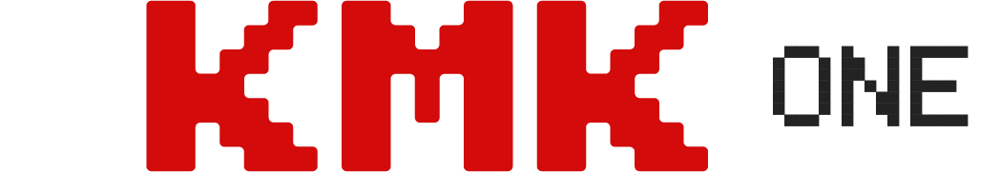

KMK One — خيارات الشعار
كلمة ONE بالأسلوب البكسلي نفسه، نهاري وليلي
A
· ONE صغيرة على خط الأساس بعد KMK
B
· ONE أسفل الشعار موزّعة على عرضه
C
· شارة ONE بجانب الشعار

D
· ONE مع مؤشر الكتابة الأحمر (مثل مؤشر تحميل البوابة)
E
· ONE عمودية بجانب الشعار